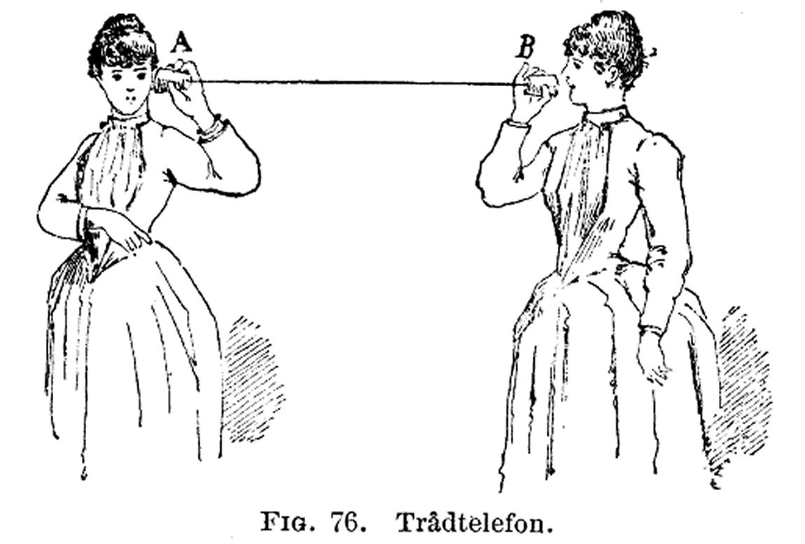

Using Spreadsheets to Express Literature Categorically
Panelists: Alyssa Currie, Elizabeth Bassett, Bassam Chiblak, and Miranda Marini
Presentation and Discussion: 1:30-2:30pm (Strong C118)
This panel navigates the benefits and challenges of expressing literature as categorical data. Our research includes studies of Eighteenth Century Newspapers, Anne Bronte’s Agnes Grey, W.M. Thackeray and F. Walker’s The Adventures of Philip, and Eden Robinson’s Monkey Beach. In utilizing spreadsheets, we show that to produce compelling arguments about literature, data extracted from a large corpus of text must be organized into meaningful and flexible categories. To put it differently, we do not use existing standardized practices to categorize our data; instead, we apply computation and distant reading to reorient our practice of close reading. We suggest that computation through spreadsheets not only informs but also enhances critical approaches to literary form and content. In short, we zoom out in order to zoom in.
Quantifying the Qualitative: Examining Relationships in Literary Texts
Panelists: Adam J. Kneeland, Lindsey Seatter, and Nadia Timperio
Presentation and Discussion: 2:30-3:30pm (Strong C118)
How do literary scholars quantify social relationships—which are inherently qualitative—in a text? This question drives the research of all three projects comprising this panel: a social network analysis of Jane Austen’s Mansfield Park and Emma, visualizing character co-occurrence in Mary Russell Mitford’s Our Village, and an algorithmic reading of Richard Wright’s Native Son. This panel will discuss the parameters, methods, and limitations of such computational research. Ultimately, we posit that deploying computational methods to guide innovative literary analysis renders this work instrumental scholarship (i.e., work that is replicable, referable, and extensible).
Deformance and Religion in Scripture, Prose, and Poetry
Panelists: Ashley Burr, Mahsa Ebadpour, and Matthew McBride
Presentation and Discussion: 3:30-4:30pm (Strong C118)
Typically, literary criticism sees the primary text as sacred; deformance seeks to complicate that paradigm. When Lisa Samuels and Jerome McGann wrote “Deformance and Interpretation,” they demonstrated how the deformed text can lead to a better understanding of the original. Yet to highlight the work of deformance they used formal poetry for examples. This panel's three projects exhibit the original procedure of Samuels and McGann's deformative criticism while also expanding it. In her project, “The Religious Libertine,” Ashley Burr uses the technique of substitution to create deformed versions of John Wilmot, Second Earl of Rochester's poem, "To the Postboy," on a spectrum from from spiritual to sinful. In a departure from formal poetry, Mahsa Ebadpour's project, “Some Like it Hot,” uses systematic alteration to deform the weather patterns of F. Scott Fitzgerald’s The Great Gatsby, affording new interpretations of heat and rain in the novel. Lastly, in a literal act of heresy, Matthew McBride’s “A Dark Tower” uses gameplay to reorder the biblical verses from Genesis 11 to blur the line between user and God, the Word and code, and performance and deformance.